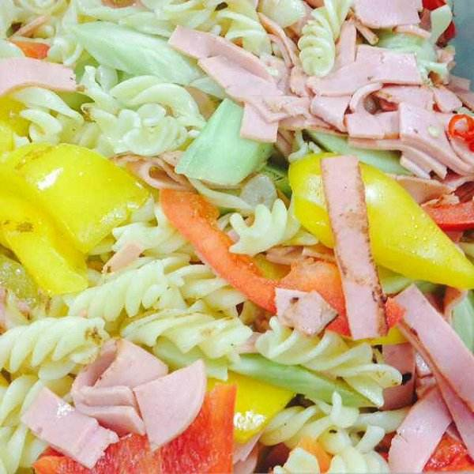
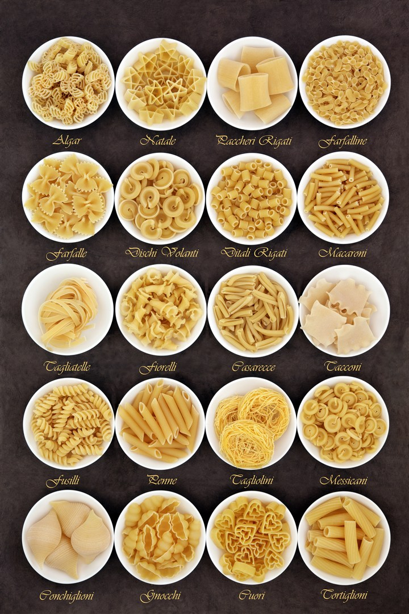

【原料】：意大利贝壳面、广式腊肠、胡萝卜、黄瓜、豆腐干、香菇、豌豆、玉米、香油、盐、鸡精。 搭配用的各种肉类、蔬菜和豆制品可以根据个人喜好随意选择，每样不必太多，但种类最好尽量丰富，这样炒出来的猫耳朵不仅色彩漂亮，而且营养多元。
【步骤】： 香肠、黄瓜、胡萝卜、豆腐干、香菇切成均匀的小丁 豌豆和玉米如果是冷冻的，提前取出化冻 意大利贝壳面冷水入锅，加入少量盐，煮15至20分钟至面变软 贝壳面煮好后，过一遍凉水 用漏网沥干水分 再加入少许香油拌匀，防止粘连 各种蔬菜丁依次下入锅中翻炒，加入盐和鸡精调味 最后下入贝壳面，翻炒均匀 出锅前撒入少许香草碎，没有也可以省略。
- 尖头梭面(Pici)
- 天使的发丝(Anclle Hair)
- 长形意大利面(Pasta Lunga)
- 传统宽面(Pappardelle)
- 意大利水管面(Macaroni)
